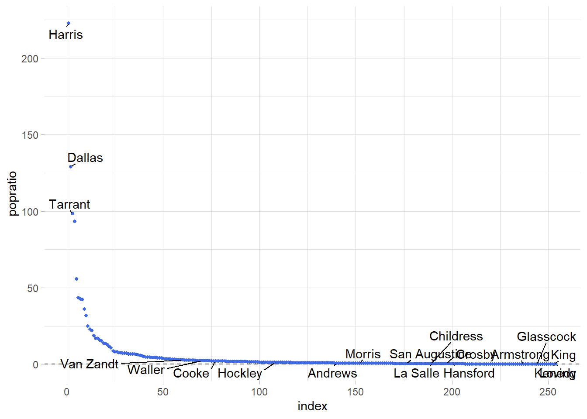
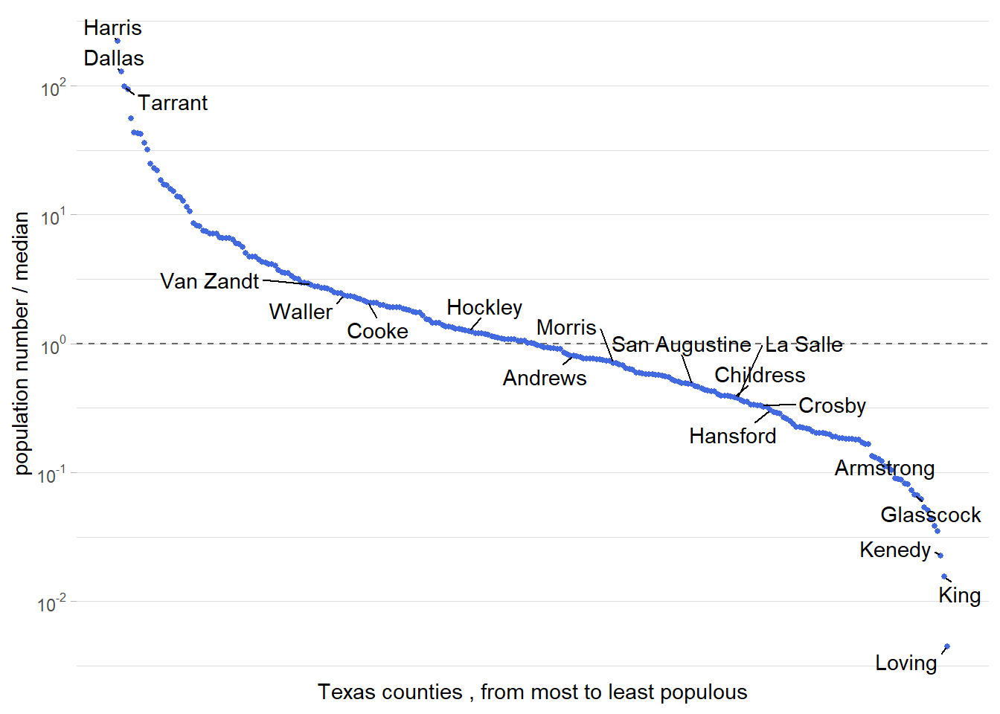
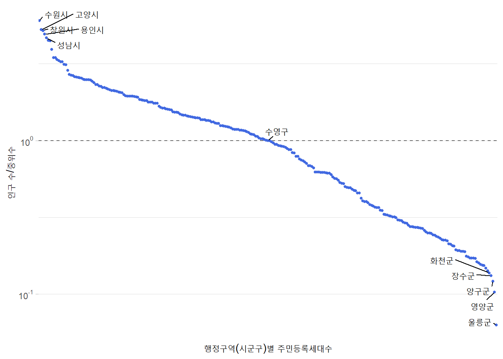

library(ggplot2)
library(dplyr)
#>
#> Attaching package: 'dplyr'
#> The following objects are masked from 'package:stats':
#>
#> filter, lag
#> The following objects are masked from 'package:base':
#>
#> intersect, setdiff, setequal, union
library(ggrepel) # geom_text_repel()|
|
Figure 3.5, Figure 3.6
1 데이터 시각화 실습 : 상위, 하위지역 그래프 Figure 3.5, Figure 3.6
1.1 패키지 불러오기
1.2 데이터 불러오기, 파악
- US_census.csv (미국 인구 통계정보 데이터셋)
US_census <- read.csv('C:/Users/seong taek/Desktop/3-1 DataVisualize/data_visualize/US_census.csv')
### 차원 파악
US_census %>% dim()
#> [1] 3143 53
### 앞부분 훑어보기
US_census %>% head(2)
#> state name FIPS pop2010 pop2000 age_under_5 age_under_18
#> 1 Alabama Autauga County 1001 54571 43671 6.6 26.8
#> 2 Alabama Baldwin County 1003 182265 140415 6.1 23.0
#> age_over_65 female white black native asian pac_isl two_plus_races hispanic
#> 1 12.0 51.3 78.5 17.7 0.4 0.9 NA 1.6 2.4
#> 2 16.8 51.1 85.7 9.4 0.7 0.7 NA 1.5 4.4
#> white_not_hispanic no_move_in_one_plus_year foreign_born
#> 1 77.2 86.3 2.0
#> 2 83.5 83.0 3.6
#> foreign_spoken_at_home hs_grad bachelors veterans mean_work_travel
#> 1 3.7 85.3 21.7 5817 25.1
#> 2 5.5 87.6 26.8 20396 25.8
#> housing_units home_ownership housing_multi_unit median_val_owner_occupied
#> 1 22135 77.5 7.2 133900
#> 2 104061 76.7 22.6 177200
#> households persons_per_household per_capita_income median_household_income
#> 1 19718 2.7 24568 53255
#> 2 69476 2.5 26469 50147
#> poverty private_nonfarm_establishments private_nonfarm_employment
#> 1 10.6 877 10628
#> 2 12.2 4812 52233
#> percent_change_private_nonfarm_employment nonemployment_establishments firms
#> 1 16.6 2971 4067
#> 2 17.4 14175 19035
#> black_owned_firms native_owned_firms asian_owned_firms pac_isl_owned_firms
#> 1 15.2 NA 1.3 NA
#> 2 2.7 0.4 1.0 NA
#> hispanic_owned_firms women_owned_firms manufacturer_shipments_2007
#> 1 0.7 31.7 NA
#> 2 1.3 27.3 1410273
#> mercent_whole_sales_2007 sales sales_per_capita accommodation_food_service
#> 1 NA 598175 12003 88157
#> 2 NA 2966489 17166 436955
#> building_permits fed_spending area density
#> 1 191 331142 594.44 91.8
#> 2 696 1119082 1589.78 114.6
### 일부 통계 요약 정보
US_census %>% summary() %>% head(2)
#> state name FIPS pop2010
#> Length:3143 Length:3143 Min. : 1001 Min. : 82
#> Class :character Class :character 1st Qu.:18178 1st Qu.: 11104
#> pop2000 age_under_5 age_under_18 age_over_65
#> Min. : 67 Min. : 0.000 Min. : 0.00 Min. : 3.50
#> 1st Qu.: 11210 1st Qu.: 5.500 1st Qu.:21.40 1st Qu.:13.10
#> female white black native
#> Min. :27.90 Min. : 2.70 Min. : 0.000 Min. : 0.000
#> 1st Qu.:49.60 1st Qu.:75.25 1st Qu.: 0.500 1st Qu.: 0.200
#> asian pac_isl two_plus_races hispanic
#> Min. : 0.000 Min. : 0.000 Min. : 0.100 Min. : 0.000
#> 1st Qu.: 0.300 1st Qu.: 0.000 1st Qu.: 1.100 1st Qu.: 1.600
#> white_not_hispanic no_move_in_one_plus_year foreign_born
#> Min. : 2.70 Min. : 51.6 Min. : 0.000
#> 1st Qu.:66.95 1st Qu.: 83.2 1st Qu.: 1.200
#> foreign_spoken_at_home hs_grad bachelors veterans
#> Min. : 0.000 Min. :47.90 Min. : 3.70 Min. : 0
#> 1st Qu.: 2.800 1st Qu.:78.40 1st Qu.:13.10 1st Qu.: 958
#> mean_work_travel housing_units home_ownership housing_multi_unit
#> Min. : 4.30 Min. : 50 Min. : 0.00 Min. : 0.00
#> 1st Qu.:19.00 1st Qu.: 5416 1st Qu.:69.50 1st Qu.: 6.10
#> median_val_owner_occupied households persons_per_household
#> Min. : 0 Min. : 22 Min. :1.100
#> 1st Qu.: 80200 1st Qu.: 4260 1st Qu.:2.370
#> per_capita_income median_household_income poverty
#> Min. : 7772 Min. : 19351 Min. : 0.0
#> 1st Qu.:19030 1st Qu.: 36952 1st Qu.:11.0
#> private_nonfarm_establishments private_nonfarm_employment
#> Min. : 0 Min. : 0
#> 1st Qu.: 229 1st Qu.: 2109
#> percent_change_private_nonfarm_employment nonemployment_establishments
#> Min. :-83.2000 Min. : 21
#> 1st Qu.:-12.0000 1st Qu.: 729
#> firms black_owned_firms native_owned_firms asian_owned_firms
#> Min. : 27 Min. : 0.200 Min. : 0.200 Min. : 0.300
#> 1st Qu.: 1074 1st Qu.: 2.100 1st Qu.: 0.525 1st Qu.: 1.400
#> pac_isl_owned_firms hispanic_owned_firms women_owned_firms
#> Min. : 0.0000 Min. : 0.300 Min. : 6.50
#> 1st Qu.: 0.1000 1st Qu.: 1.400 1st Qu.:22.70
#> manufacturer_shipments_2007 mercent_whole_sales_2007 sales
#> Min. : 0 Min. : 0 Min. : 0
#> 1st Qu.: 0 1st Qu.: 42125 1st Qu.: 79988
#> sales_per_capita accommodation_food_service building_permits
#> Min. : 0 Min. : 0 Min. : 0
#> 1st Qu.: 6993 1st Qu.: 9349 1st Qu.: 5
#> fed_spending area density
#> Min. : 0 Min. : 2.0 Min. : 0.0
#> 1st Qu.: 102922 1st Qu.: 430.7 1st Qu.: 16.9
### 일부 컬럼 클래스(타입) 확인
US_census %>% sapply(class) %>% head()
#> state name FIPS pop2010 pop2000 age_under_5
#> "character" "character" "integer" "integer" "integer" "numeric"
### 일부 컬럼 자료형 확인
US_census %>% sapply(typeof) %>% head()
#> state name FIPS pop2010 pop2000 age_under_5
#> "character" "character" "integer" "integer" "integer" "double"1.3 전처리
### Texas주의 인구 밀도가 높은 상위3개, 하위3개, 나머지의 랜덤한 지역 d.f 만들기
tx_counties <- US_census %>%
filter(state == 'Texas') %>% # Texas지역만 필터
select(name, pop2010) %>% # name,pop2010 열만 선택
mutate(county = gsub(' County','',name), # name 열에서 County문자열을 공백으로 대체하고 county열 생성
popratio = pop2010/median(pop2010)) %>% # pop2010 값에서 pop2010의 중앙값을 나눈 비율을 popratio열로 생성
arrange(desc(popratio)) %>% # popratio 열을 내림차순 정렬
mutate(index = 1:n(),
label = ifelse(index<=3 | index > n()-3 | runif(n()) < .04, county,''))
# index값이 3이하, 행의 수에서 3을 뺀 값보다 크거나, 0,1사이의 값을 뽑아 0.04보다 작으면 'county'값을 가지고 그렇지 않으면 ''(빈문자열) 값 가짐
tx_counties %>% head()
#> name pop2010 county popratio index label
#> 1 Harris County 4092459 Harris 222.64616 1 Harris
#> 2 Dallas County 2368139 Dallas 128.83624 2 Dallas
#> 3 Tarrant County 1809034 Tarrant 98.41869 3 Tarrant
#> 4 Bexar County 1714773 Bexar 93.29052 4
#> 5 Travis County 1024266 Travis 55.72417 5
#> 6 El Paso County 800647 El Paso 43.55840 62 Figure 3.5
- 사용 데이터셋 : tx_counties
- x = index, y = popratio
- geom_hline
- 수평선 위치 : 0
- 라인 종류 : 2 (눈금)
- 색상 ‘grey40’
- geom_point
- 점 크기 : 1
- 점 색상 : ‘royalblue’
- geom_text_repel
- 라벨 : ‘label’
- 라벨과 지점 사이 선의 최소 길이 : 0
- 겹치는 라벨 제어의 최대 수 : 100
- 테마 : 밝게
- 플롯 영역의 테두리(border) 제거
ggplot(tx_counties, aes(x=index, y=popratio)) +
geom_hline(yintercept = 0,linetype=2, color = 'grey40') +
geom_point(size=1, color='royalblue') +
geom_text_repel(aes(label=label),
min.segment.length = 0,
max.overlaps = 100) +
theme_light() +
theme(panel.border = element_blank())
3 Fugiure 3.6
- 사용 데이터셋 : tx_counties
- x = index, y = popratio
- geom_hline
- 수평선 위치 : 1
- 라인 종류 : 2 (눈금)
- 색상 ‘grey40’
- geom_point
- 점 크기 : 1
- 점 색상 : ‘royalblue’
- geom_text_repel
- 라벨 : ‘label’
- 라벨과 지점 사이 선의 최소 길이 : 0
- 겹치는 라벨 제어의 최대 수 : 100
- scale_y_log10
- y축 이름
- y축 간격
- y축 간격 라벨 : label_log10
- scale_x_continuous
- x축 이름
- x축 간격 : NULL (자동)
- 테마 : 밝게
- 플롯 영역의 테두리(border) 제거
### -2부터 2까지의 지수값을 포함하는 문자열을 표현식으로 생성
label_log10 <- sapply(-2:2,function(i) as.expression(bquote(10^ .(i))))
label_log10
#> expression(10^-2L, 10^-1L, 10^0L, 10^1L, 10^2L)
ggplot(tx_counties, aes(x = index, y = popratio)) +
geom_hline(yintercept = 1,linetype = 2, color = 'grey40') +
geom_point(size = 1, color = 'royalblue') +
geom_text_repel(aes(label=label),
min.segment.length = 0,
max.overlaps = 100) +
scale_y_log10(name='population number / median',
breaks = 10^(-2:2),
labels= label_log10) +
scale_x_continuous(name = 'Texas counties , from most to least populous',
breaks = NULL) +
theme_light() +
theme(panel.border = element_blank())
4 예제
- 2023년 시군구 인구수 Figure 3.6
4.1 데이터 불러오기, 파악
- 행정구역 시군구 별 주민등록세대수.csv (2022.11 ~ 2023.02)
data_202302 <- read.csv('C:/Users/seong taek/Desktop/3-1 DataVisualize/data_visualize/행정구역_시군구_별_주민등록세대수_202302.csv')
### 차원 파악
data_202302 %>% dim()
#> [1] 274 5
### 앞부분 훑어보기
data_202302 %>% head()
#> 행정구역.시군구.별 X2022.11 X2022.12 X2023.01 X2023.02
#> 1 종로구 72666 72524 72479 72773
#> 2 중구 63167 63139 63123 63492
#> 3 용산구 109905 109805 109734 109778
#> 4 성동구 133435 133305 133293 133517
#> 5 광진구 169376 169291 169416 169648
#> 6 동대문구 170154 169873 169716 170766
### 통계 요약 정보
data_202302 %>% summary()
#> 행정구역.시군구.별 X2022.11 X2022.12 X2023.01
#> Length:274 Min. : 0 Min. : 0 Min. : 0
#> Class :character 1st Qu.: 26391 1st Qu.: 26590 1st Qu.: 26546
#> Mode :character Median : 81122 Median : 81158 Median : 81177
#> Mean :101197 Mean :101227 Mean :101274
#> 3rd Qu.:145260 3rd Qu.:145426 3rd Qu.:145706
#> Max. :528097 Max. :528482 Max. :529082
#> X2023.02
#> Min. : 0
#> 1st Qu.: 26522
#> Median : 81243
#> Mean :101442
#> 3rd Qu.:146308
#> Max. :530462
### 컬럼 클래스(타입) 확인
data_202302 %>% sapply(class)
#> 행정구역.시군구.별 X2022.11 X2022.12 X2023.01
#> "character" "integer" "integer" "integer"
#> X2023.02
#> "integer"
### 컬럼 자료형 확인
data_202302 %>% sapply(typeof)
#> 행정구역.시군구.별 X2022.11 X2022.12 X2023.01
#> "character" "integer" "integer" "integer"
#> X2023.02
#> "integer"4.2 전처리
data_202302_second <- data_202302 %>%
filter(X2023.02 != 0) %>% # 0값이 아닌것만 필터링
select(행정구역.시군구.별, X2023.02) %>% # 열 지정 선택
mutate(popratio = X2023.02/median(X2023.02)) %>% # 새로운 컬럼 'popratio'
arrange(desc(popratio)) %>% # 내림차순 정렬
mutate(index = 1:n(),
label = ifelse(index<=5 | index > n()-5 | index==median(index), 행정구역.시군구.별,''))
# index값이 5이하, 행의 수에서 5를 뺀 값보다 크거나, index가 중위수인 index이면 '행정구역.시군구.별' 값을 가지고 그렇지 않으면 ''(빈문자열) 값 가짐
data_202302_second %>% head()
#> 행정구역.시군구.별 X2023.02 popratio index label
#> 1 수원시 530462 6.043498 1 수원시
#> 2 고양시 462873 5.273464 2 고양시
#> 3 창원시 456357 5.199228 3 창원시
#> 4 용인시 432476 4.927154 4 용인시
#> 5 성남시 409466 4.665003 5 성남시
#> 6 청주시 394735 4.497175 64.3 Fugiure 3.6
- 사용 데이터셋 : data_202302_second
- x = index, y = popratio
- geom_hline
- 수평선 위치 : 1
- 라인 종류 : 2 (눈금)
- 색상 ‘grey40’
- geom_point
- 점 크기 : 1
- 점 색상 : ‘royalblue’
- geom_text_repel
- 라벨 : ‘label’
- 라벨과 지점 사이 선의 최소 길이 : 0
- 겹치는 라벨 제어의 최대 수 : 100
- scale_y_log10
- y축 이름
- y축 간격
- y축 간격 라벨 : label_log10
- y축 범위
- scale_x_continuous
- x축 이름
- x축 간격 : NULL (자동)
- 테마 : 밝게
- 플롯 영역의 테두리(border) 제거
### -2부터 2까지의 지수값을 포함하는 문자열을 표현식으로 생성
label_log10 <- sapply(-2:2,function(i) as.expression(bquote(10^ .(i))))
label_log10
#> expression(10^-2L, 10^-1L, 10^0L, 10^1L, 10^2L)
ggplot(data_202302_second, aes(x = index, y = popratio)) +
geom_hline(yintercept = 1,linetype = 2, color = 'grey40') +
geom_point(size = 1, color = 'royalblue') +
geom_text_repel(aes(label=label),
min.segment.length = 0,
max.overlaps = 100) +
scale_y_log10(name='인구 수/중위수',
breaks = 10^(-2:2),
labels= label_log10,
limits = c(10^-1.3, 10^1.3)) +
scale_x_discrete(name = '행정구역(시군구)별 주민등록세대수',
breaks = NULL) +
theme_light() +
theme(panel.border = element_blank())